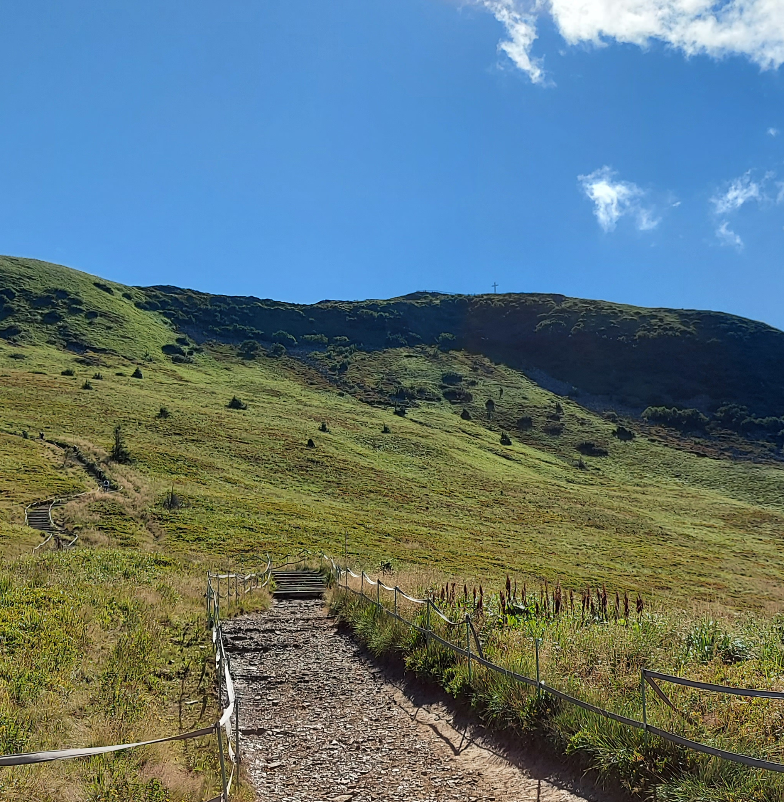

HOME
O MNIE
PORTFOLIO
UMIEJĘTNOŚCI
KONTAKT
O MNIE..
JA I MOJE ZAINTERESOWANIA
Jestem nastolatkiem o szerokim gronie zainteresowań i pasji.
Urodziłem się w 2008 roku, a swoją przygodę z programowaniem
zaczynałem już w wieku 10 lat. Zaczynałem pisać proste komunikaty
w batchu a nawet programy do dialogów. Kiedy odkryłem scratch'a
tworzyłem przede wszystkim gry, proste labirynty czy wyścigi samochodowe.
Swojego czasu często grywałem w Minecraft, tworzyłem własne serwery
i uczyłem się pracy z konsolami. Nauczyłem się pisać pluginy do gier,
tak zaczęła się moja przygoda z Javą jednak tylko w rozszerzeniu JavaPlugin.
Jakoś w 7 klasie zainteresowałem się programowaniem stron internetowych,
korzystałem z różnych kursów i dostępnych źródeł. Wtedy właśnie zobaczyłem
czym jest front-end i szkole się w tej dziedzinie do dzisiaj. Programowanie
jest jedną z moich pasji a właśnie z tym wiąże przyszłość. Uwielbiam również
podróże, zdobyłem dziesiątki szczytów górskich i zwiedziłem kilka wysp. Jedną
z moich zajawek jest fotografia i obróbka graficzna.
